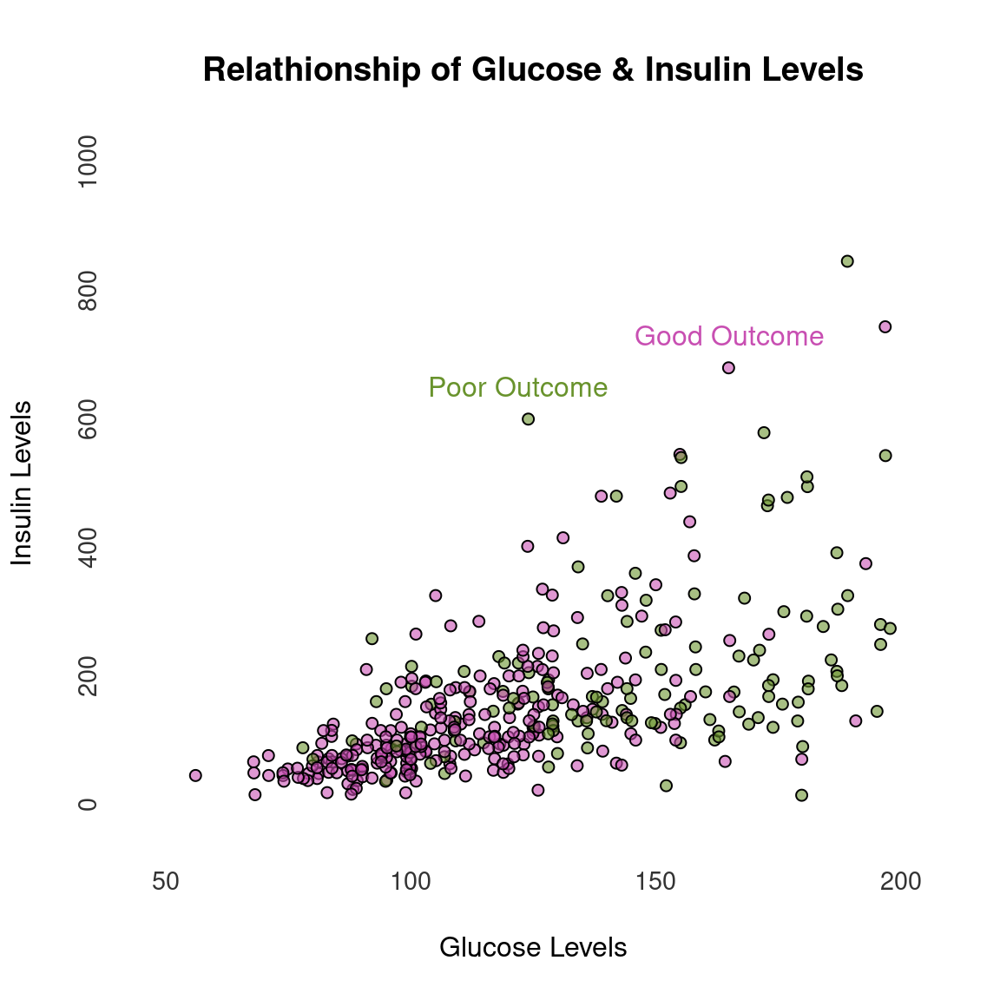

1 Basic Data Visualization with Base R
1.1 Scatter Plot
Simple scatter plot and regression line. Please ignore the data and its possible interpretation.
dm <- read.csv("data/diabetes.csv", na.strings = c("NA", "0")) #string NA and 0 are considered NA
dm$Outcome <- ifelse(is.na(dm$Outcome), 0, 1)
dm$Glucose = jitter(dm$Glucose)
dm$Insulin = jitter(dm$Insulin)
alpha = 150 # Transparent points
palette(c(rgb(200, 79, 178, alpha = alpha, maxColorValue = 255), rgb(105, 147, 45, alpha = alpha, maxColorValue = 255)))
plot(dm$Glucose, dm$Insulin,
bg=ifelse(dm$Outcome==0, rgb(200, 79, 178, alpha = alpha, maxColorValue = 255), rgb(105, 147, 45, alpha = alpha, maxColorValue = 255)),
pch=21,
cex=0.9,
main ="Relathionship of Glucose & Insulin Levels",
#sub = "UCI Machine Learning Data - Pima Indian Diabetes Database",
ylab = "Insulin Levels",
xlab = "Glucose Levels",
ylim = c(0,1000),
xlim = c(50,200),
axes = FALSE,
frame.plot = FALSE)
at = pretty(dm$Glucose)
mtext(side = 1, text = at, at = at,
col = "grey20", line = 1, cex = 0.9)
at = pretty(dm$Insulin)
mtext(side = 2, text = at, at = at, col = "grey20", line = 1, cex = 0.9)
text(165, 730, "Good Outcome", col = rgb(200, 79, 178, maxColorValue = 255))
text(122,650, "Poor Outcome", col = rgb(105, 147, 45, maxColorValue = 255))